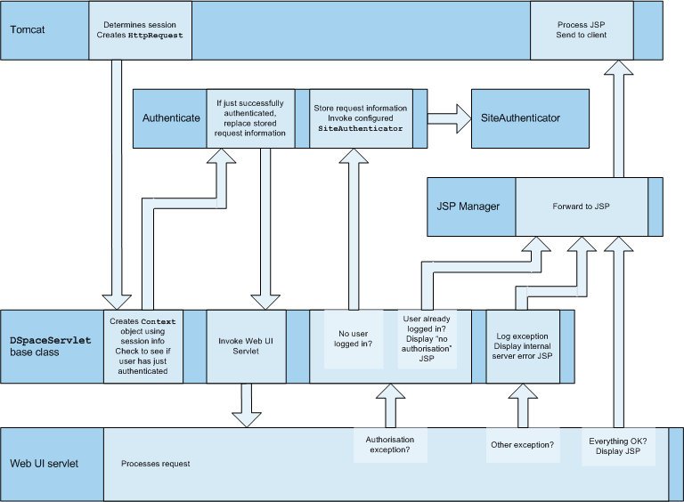

Back to contents
Back to architecture overview
The DSpace Web UI is the largest and most-used component in the application layer. Built on Java Servlet and JavaServer Page technology, it allows end-users to access DSpace over the Web via their Web browsers.
It also features an administration section, consisting of pages intended for use by central administrators. Presently, this part of the Web UI is not particularly sophisticated; users of the administration section need to know what they are doing! Selected parts of this may also be used by collection [FIXME: administrators or editors?]
The Web UI-related files are located in a variety of directories in the DSpace source tree. Note that as of DSpace version 1.2, the deployment mechanism has changed; the build process creates easy-to-deploy Web application archives (.war files).
| Location | Description |
|---|---|
org.dspace.app.webui |
Web UI source files |
org.dspace.app.webui.filter |
Servlet Filters (Servlet 2.3 spec) |
org.dspace.app.webui.jsptag |
Custom JSP tag class files |
org.dspace.app.webui.servlet |
Servlets for main Web UI (controllers) |
org.dspace.app.webui.servlet.admin |
Servlets that comprise the administration part of the Web UI |
org.dspace.app.webui.util |
Miscellaneous classes used by the servlets and filters |
[dspace-source]/jsp |
The JSP files |
[dspace-source]/jsp/local |
This is where you can place customized versions of JSPs -- see the configuration section |
[dspace-source]/jsp/WEB-INF/dspace-tags.tld |
Custom DSpace JSP tag descriptor |
[dspace-source]/etc/dspace-web.xml |
The Web application deployment descriptor. Before including in the .war file, the text @@dspace.dir@@ will be replaced with the DSpace installation directory (referred to as [dspace] elsewhere in this system documentation). This allows the Web application to pick up the DSpace configuration and environment. |
The DSpace build process constructs a Web application archive, which is placed in [dspace-source]/build/dspace.war. The build_wars Ant target does the work. The process works as follows:
[dspace-source]/etc/dspace-web.xml is copied to [dspace-source]/build and the @@dspace.dir@@ token inside it replaced with the DSpace installation directory (dspace.dir property from dspace.cfg[dspace-source]/build/jsp[dspace-source]/jsp/local are copied on top of these, thus 'overriding' the default versions[dspace-source]/build/dspace.war is builtThe contents of dspace.war are:
[dspace-source]/jsp/local will have overwritten the defaults from the DSpace source distribution)WEB-INF/classes -- the compiled DSpace classesWEB-INF/lib -- the third party library JAR files from [dspace-source]/lib, minus servlet.jar which will be available as part of Tomcat (or other servlet engine)WEB-INF/web.xml -- web deployment descriptor, copied from [dspace-source]/build/dspace-web.xmlWEB-INF/dspace-tags.tld -- tag descriptorNote that this does mean there are multiple copies of the compiled DSpace code and third-party libraries in the system, so care must be taken to ensure that they are all in sync. (The storage overhead is a few megabytes, totally insignificant these days.) In general, when you change any DSpace code or JSP, it's best to do a complete update of both the installation ([dspace]), and to rebuild and redeploy the Web UI and OAI .war files, by running this in [dspace-source]:
ant -D[dspace]/config/dspace.cfg update
and then following the instructions that command writes to the console.
The Web UI is loosely based around the MVC (model, view, controller) model. The content management API corresponds to the model, the Java Servlets are the controllers, and the JSPs are the views. Interactions take the following basic form:
The reasons for this approach are:
The org.dspace.app.webui.servlet.LoadDSpaceConfig servlet is always loaded first. This is a very simple servlet that checks the dspace-config context parameter from the DSpace deployment descriptor, and uses it to locate dspace.cfg. It also loads up the Log4j configuration. It's important that this servlet is loaded first, since if another servlet is loaded up, it will cause the system to try and load DSpace and Log4j configurations, neither of which would be found.
All DSpace servlets are subclasses of the DSpaceServlet class. The DSpaceServlet class handles some basic operations such as creating a DSpace Context object (opening a database connection etc.), authentication and error handling. Instead of overriding the doGet and doPost methods as one normally would for a servlet, DSpace servlets implement doDSGet or doDSPost which have an extra context parameter, and allow the servlet to throw various exceptions that can be handled in a standard way.
The DSpace servlet processes the contents of the HTTP request. This might involve retrieving the results of a search with a query term, accessing the current user's eperson record, or updating a submission in progress. According to the results of this processing, the servlet must decide which JSP should be displayed. The servlet then fills out the appropriate attributes in the HttpRequest object that represents the HTTP request being processed. This is done by invoking the setAttribute method of the javax.servlet.http.HttpServletRequest object that is passed into the servlet from Tomcat. The servlet then forwards control of the request to the appropriate JSP using the JSPManager.showJSP method.
The JSPManager.showJSP method uses the standard Java servlet forwarding mechanism is then used to forward the HTTP request to the JSP. The JSP is processed by Tomcat and the results sent back to the user's browser.
There is an exception to this servlet/JSP style: index.jsp, the 'home page', receives the HTTP request directly from Tomcat without a servlet being invoked first. This is because in the servlet 2.3 specification, there is no way to map a servlet to handle only requests made to '/'; such a mapping results in every request being directed to that servlet. By default, Tomcat forwards requests to '/' to index.jsp. To try and make things as clean as possible, index.jsp contains some simple code that would normally go in a servlet, and then forwards to home.jsp using the JSPManager.showJSP method. This means localized versions of the 'home page' can be created by placing a customized home.jsp in [dspace-source]/jsp/local, in the same manner as other JSPs.
[dspace-source]/jsp/dspace-admin/index.jsp, the administration UI index page, is invoked directly by Tomcat and not through a servlet for similar reasons.
At the top of each JSP file, right after the license and copyright header, is documented the appropriate attributes that a servlet must fill out prior to forwarding to that JSP. No validation is performed; if the servlet does not fill out the necessary attributes, it is likely that an internal server error will occur.
Many JSPs containing forms will include hidden parameters that tell the servlets which form has been filled out. The submission UI servlet (SubmitServlet is a prime example of a servlet that deals with the input from many different JSPs. The step hidden parameter is used to inform the servlet which form has been filled out (which step of submission the user has just completed.)
Below is a detailed, scary diagram depicting the flow of control during the whole process of processing and responding to an HTTP request. More information about the authentication mechanism is mostly described in the configuration section.

Flow of Control During HTTP Request Processing
The DSpace JSPs all use some custom tags defined in /dspace/jsp/WEB-INF/dspace-tags.tld, and the corresponding Java classes reside in org.dspace.app.webui.jsptag. The tags are listed below. The dspace-tags.tld file contains detailed comments about how to use the tags, so that information is not repeated here.
layoutJust about every JSP uses this tag. It produces the standard HTML header and <BODY>tag. Thus the content of each JSP is nested inside a <dspace:layout> tag. The (XML-style)attributes of this tag are slightly complicated--see dspace-tags.tld. The JSPs in the source code bundle also provide plenty of examples.
sidebarCan only be used inside a layout tag, and can only be used once per JSP. The content between the start and end sidebar tags is rendered in a column on the right-hand side of the HTML page. The contents can contain further JSP tags and Java 'scriptlets'.
dateDisplays the date represented by an org.dspace.content.DCDate object. Just the one representation of date is rendered currently, but this could use the user's browser preferences to display a localized date in the future.
includeObsolete, simple tag, similar to jsp:include. In versions prior to DSpace 1.2, this tag would use the locally modified version of a JSP if one was installed in jsp/local. As of 1.2, the build process now performs this function, however this tag is left in for backwards compatibility.
itemDisplays an item record, including Dublin Core metadata and links to the bitstreams within it. Note that the displaying of the bitstream links is simplistic, and does not take into account any of the bundling structure. This is because DSpace does not have a fully-fledged dissemination architectural piece yet.
Displaying an item record is done by a tag rather than a JSP for two reasons: Firstly, it happens in several places (when verifying an item record during submission or workflow review, as well as during standard item accesses), and secondly, displaying the item turns out to be mostly code-work rather than HTML anyway. Of course, the disadvantage of doing it this way is that it is slightly harder to customize exactly what is displayed from an item record; it is necessary to edit the tag code (org.dspace.app.webui.jsptag.ItemTag). Hopefully a better solution can be found in the future.
itemlist, collectionlist, communitylistThese tags display ordered sequences of items, collections and communities, showing minimal information but including a link to the page containing full details. These need to be used in HTML tables.
popupThis tag is used to render a link to a pop-up page (typically a help page.) If Javascript is available, the link will either open or pop to the front any existing DSpace pop-up window. If Javascript is not available, a standard HTML link is displayed that renders the link destination in a window named 'dspace.popup'. In graphical browsers, this usually opens a new window or re-uses an existing window of that name, but if a window is re-used it is not 'raised' which might confuse the user. In text browsers, following this link will simply replace the current page with the destination of the link. This obviously means that Javascript offers the best functionality, but other browsers are still supported.
selectepersonA tag which produces a widget analogous to HTML <SELECT>, that allows a user to select one or multiple e-people from a pop-up list.
sfxlinkUsing an item's Dublin Core metadata DSpace can display an SFX link, if an SFX server is available. This tag does so for a particular item if the sfx.server.url property is defined in dspace.cfg.
For the most part, the DSpace item display just gives a link that allows an end-user to download a bitstream. However, if a bundle has a primary bitstream whose format is of MIME type text/html, instead a link to the HTML servlet is given.
So if we had an HTML document like this:
contents.html chapter1.html chapter2.html chapter3.html figure1.gif figure2.jpg figure3.gif figure4.jpg figure5.gif figure6.gif
The Bundle's primary bitstream field would point to the contents.html Bitstream, which we know is HTML (check the format MIME type) and so we know which to serve up first.
The HTML servlet employs a trick to serve up HTML documents without actually modifying the HTML or other files themselves. Say someone is looking at contents.html from the above example, the URL in their browser will look like this:
https://dspace.mit.edu/html/1721.1/12345/contents.html
If there's an image called figure1.gif in that HTML page, the browser will do HTTP GET on this URL:
https://dspace.mit.edu/html/1721.1/12345/figure1.gif
The HTML document servlet can work out which item the user is looking at, and then which Bitstream in it is called figure1.gif, and serve up that bitstream. Similar for following links to other HTML pages. Of course all the links and image references have to be relative and not absolute.
This can cope with relative links that refer to a deeper path, e.g.
<IMG SRC="images/figure1.gif">
Remember that in the Bitstream table in the database we have the 'name' field, which always contains the filename with no path (figure1.gif). We also have the source field, which may contain the full pathname of the file as it appeared on the submitter's hard drive, but this is browser- and OS-dependent, so we can't rely on it. All we can rely on is the filename.
We can still work out what images/figure1.gif is by making the HTML document servlet strip any path that comes in from the URL, e.g.
https://dspace.mit.edu/html/1721.1/12345/images/figure1.gif
^^^^^^^
Strip this
BUT all the filenames (regardless of directory names) must be unique. For example, this wouldn't work:
contents.html chapter1.html chapter2.html chapter1_images/figure.gif chapter2_images/figure.gif
since the HTML document servlet wouldn't know which bitstream to serve up for:
https://dspace.mit.edu/html/1721.1/12345/chapter1_images/figure.gif https://dspace.mit.edu/html/1721.1/12345/chapter2_images/figure.gif
since it would just have figure.gif in the Bitstream table. Thus, the limitations are:
../images/foo.gif or /images/foo.gif)The submission UI has an optional feature that came about as a result of MIT Libraries policy. If the block.theses parameter in dspace.cfg is true, an extra checkbox is included in the first page of the submission UI. This asks the user if the submission is a thesis. If the user checks this box, the submission is halted (deleted) and an error message displayed, explaining that DSpace should not be used to submit theses. This feature can be turned off and on, and the message displayed (/dspace/jsp/submit/no-theses.jsp can be localized as necessary.
The DSpace platform supports the Open Archives Initiative Protocol for Metadata Harvesting (OAI-PMH) version 2.0 as a data provider. This is accomplished using the OAICat framework from OCLC.
The DSpace build process builds a Web application archive, [dspace-source]/build/dspace-oai.war), in much the same way as the Web UI build process described above. The only differences are that the JSPs are not included, and [dspace-source]/etc/oai-web.xml is used as the deployment descriptor. This 'webapp' is deployed to receive and respond to OAI-PMH requests via HTTP. Note that typically it should not be deployed on SSL (https: protocol). In a typical configuration, this is deployed at dspace-oai, for example:
http://dspace.myu.edu/dspace-oai/request?verb=Identify
The 'base URL' of this DSpace deployment would be:
http://dspace.myu.edu/dspace-oai/request
It is this URL that should be registered with www.openarchives.org. Note that you can easily change the 'request' portion of the URL by editing [dspace-source]/etc/oai-web.xml and rebuilding and deploying dspace-oai.war.
DSpace provides implementations of the OAICat interfaces AbstractCatalog, RecordFactory and Crosswalk that interface with the DSpace content management API and harvesting API (in the search subsystem).
Only the basic oai_dc unqualified Dublin Core metadata set is exported at present; this is particularly easy since all items have qualified Dublin Core metadata. When this metadata is harvested, the qualifiers are simply stripped; for example, description.abstract is exposed as unqualified description. The description.provenance field is hidden, as this contains private information about the submitter and workflow reviewers of the item, including their e-mail addresses. Additionally, to keep in line with OAI community practices, values of contributor.author are exposed as creator values.
To add support for other metadata sets is simply a matter of creating another Crosswalk implementation, and adding it to the oaicat.properties file described below.
Note that the current simple DC implementation (org.dspace.app.oai.OAIDCCrosswalk) does not currently strip out any invalid XML characters that may be lying around in the data. If your database contains a DC value with, for example, some ASCII control codes (form feed etc.) this may cause OAI harvesters problems. This should rarely occur, however. XML entities (such as >) are encoded (e.g. to >)
In addition to the implementations of the OAICat interfaces, there are two configuration files relevant to OAI support:
oaicat.propertiesThis resides as a template in [dspace]/config/templates, and the live version is written to [dspace]/config. You probably won't need to edit this; the install-configs script fills out the relevant deployment-specific parameters. You might want to change the earliestDatestamp field to accurately reflect the oldest datestamp in the system. (Note that this is the value of the last_modified column in the Item database table.)
oai-web.xmlThis standard Java Servlet 'deployment descriptor' is stored in the source as [dspace-source]/etc/oai-web.xml, and is written to /dspace/oai/WEB-INF/web.xml.
OAI-PMH allows repositories to expose an hierarchy of sets in which records may be placed. A record can be in zero or more sets.
DSpace exposes collections as sets. The organization of communities is likely to change over time, and is therefore a less stable basis for selective harvesting.
Each collection has a corresponding OAI set, discoverable by harvesters via the ListSets verb. The setSpec is the Handle of the collection, with the ':' and '/' converted to underscores so that the Handle is a legal setSpec, for example:
hdl_1721.1_1234
Naturally enough, the collection name is also the name of the corresponding set.
Every item in OAI-PMH data repository must have an unique identifier, which must conform to the URI syntax. As of DSpace 1.2, Handles are not used; this is because in OAI-PMH, the OAI identifier identifies the metadata record associated with the resource. The resource is the DSpace item, whose resource identifier is the Handle. In practical terms, using the Handle for the OAI identifier may cause problems in the future if DSpace instances share items with the same Handles; the OAI metadata record identifiers should be different as the different DSpace instances would need to be harvested separately and may have different metadata for the item.
The OAI identifiers that DSpace uses are of the form:
oai:host name:handle
For example:
oai:dspace.myu.edu:123456789/345
If you wish to use a different scheme, this can easily be changed by editing the value of OAI_ID_PREFIX at the top of the org.dspace.app.oai.DSpaceOAICatalog class. (You do not need to change the code if the above scheme works for you; the code picks up the host name and Handles automatically from the DSpace configuration.)
OAI provides no authentication/authorisation details, although these could be implemented using standard HTTP methods. It is assumed that all access will be anonymous for the time being.
A question is, "is all metadata public?" Presently the answer to this is yes; all metadata is exposed via OAI-PMH, even if the item has restricted access policies. The reasoning behind this is that people who do actually have permission to read a restricted item should still be able to use OAI-based services to discover the content.
If in the future, this 'expose all metadata' approach proves unsatisfactory for any reason, it should be possible to expose only publicly readable metadata. The authorisation system has separate permissions for READing and item and READing the content (bitstreams) within it. This means the system can differentiate between an item with public metadata and hidden content, and an item with hidden metadata as well as hidden content. In this case the OAI data repository should only expose items those with anonymous READ access, so it can hide the existence of records to the outside world completely. In this scenario, one should be wary of protected items that are made public after a time. When this happens, the items are "new" from the OAI-PMH perspective.
OAI-PMH harvesters need to know when a record has been created, changed or deleted. DSpace keeps track of a 'last modified' date for each item in the system, and this date is used for the OAI-PMH date stamp. This means that any changes to the metadata (e.g. admins correcting a field, or a withdrawal) will be exposed to harvesters.
As part of each record given out to a harvester, there is an optional, repeatable "about" section which can be filled out in any (XML-schema conformant) way. Common uses are for provenance and rights information, and there are schemas in use by OAI communities for this. Presently DSpace does not provide any of this information.
DSpace keeps track of deletions (withdrawals). These are exposed via OAI, which has a specific mechansim for dealing with this. Since DSpace keeps a permanent record of withdrawn items, in the OAI-PMH sense DSpace supports deletions 'persistently'. This is as opposed to 'transient' deletion support, which would mean that deleted records are forgotten after a time.
Once an item has been withdrawn, OAI-PMH harvests of the date range in which the withdrawal occurred will find the 'deleted' record header. Harvests of a date range prior to the withdrawal will not find the record, despite the fact that the record did exist at that time.
As an example of this, consider an item that was created on 2002-05-02 and withdrawn on 2002-10-06. A request to harvest the month 2002-10 will yield the 'record deleted' header. However, a harvest of the month 2002-05 will not yield the original record.
Note that presently, the deletion of 'expunged' items is not exposed through OAI.
An OAI data provider can prevent any performance impact caused by harvesting by forcing a harvester to receive data in time-separated chunks. If the data provider receives a request for a lot of data, it can send part of the data with a resumption token. The harvester can then return later with the resumption token and continue.
DSpace supports resumption tokens for 'ListRecords' OAI-PMH requests. ListIdentifiers and ListSets requests do not produce a particularly high load on the system, so resumption tokens are not used for those requests.
Each OAI-PMH ListRecords request will return at most 100 records. This limit is set at the top of org.dspace.app.oai.DSpaceOAICatalog.java (MAX_RECORDS). A potential issue here is that if a harvest yields an exact multiple of MAX_RECORDS, the last operation will result in a harvest with no records in it. It is unclear from the OAI-PMH specification if this is acceptable.
When a resumption token is issued, the optional completeListSize and cursor attributes are not included. OAICat sets the expirationDate of the resumption token to one hour after it was issued, though in fact since DSpace resumption tokens contain all the information required to continue a request they do not actually expire.
Resumption tokens contain all the state information required to continue a request. The format is:
from/until/setSpec/offset
from and until are the ISO 8601 dates passed in as part of the original request, and setSpec is also taken from the original request. offset is the number of records that have already been sent to the harvester. For example:
2003-01-01//hdl_1721_1_1234/300
This means the harvest is 'from' 2003-01-01, has no 'until' date, is for collection hdl:1721.1/1234, and 300 records have already been sent to the harvester. (Actually, if the original OAI-PMH request doesn't specify a 'from' or 'until, OAICat fills them out automatically to '0000-00-00T00:00:00Z' and '9999-12-31T23:59:59Z' respectively. This means DSpace resumption tokens will always have from and until dates in them.)
DSpace has a set of command line tools for importing and exporting items in batches, using the DSpace simple archive format. The tools are not terribly robust, but are useful and are easily modified. They also give a good demonstration of how to implement your own item importer if desired.
Due to a bug as of 1.2 beta 2, if you have an Item template in your Collection, then those default values may be added to Items that you import. Be sure to remove the template if this is unwanted behavior.
The basic concept behind the DSpace's simple archive format is to create an archive, which is directory full of items, with a subdirectory per item. Each item directory contains a file for the item's descriptive metadata, and the files that make up the item.
archive_directory/
item_000/
dublin_core.xml -- qualified Dublin Core metadata
contents -- text file containing one line per filename
file_1.doc -- files to be added as bitstreams to the item
file_2.pdf
item_001/
dublin_core.xml
contents
file_1.png
...
The dublin_core.xml file has the following format,
where each Dublin Core element has it's own entry within
a <dcvalue> tagset. There are currently
three tag elements available in the <dcvalue>
tagset:
<element> - the Dublin Core element
<qualifier> - the element's qualifier
<language> - (optional)ISO language code for element
<dublin_core>
<dcvalue element="title" qualifier="none">A Tale of Two Cities</dcvalue>
<dcvalue element="date" qualifier="issued">1990</dcvalue></dublin_core>
<dcvalue element="title" qualifier="alternate" language="fr" ">J'aime les Printemps</dcvalue>
</dublin_core>
(Note the optional language tag which notifies the system that the optional title is in French.)
Note: Before running the item importer over items previously exported from a DSpace instance, please first refer to Transferring Items Between DSpace Instances.
The item importer is in org.dspace.app.itemimport.ItemImport, and is run with the
dsrun utility in the dspace/bin directory. Running it with -h gets
the current command-line arguments. Another very important flag is the --test flag, which you
can use with any command to simulate all of the actions it will perform without actually making
any changes to your DSpace instance - very useful for validating your item directories before
doing an import. In the importer's arguments you can use either the user's database ID or email address
and the eperson ID, and the collection's database ID or handle as arguments. Currently with
the importer you can add, remove, and replace items in a collection. If you specify more
than one collection argument then the items will be imported to multiple collections,
and the first collection specified becomes the "owning" collection. If there is an error and
the import is aborted, there is a --resume flag that you can try to resume the import where you
left off after you fix the error.
To add items to a collection with an EPerson as the submitter, type:
dsrun org.dspace.app.itemimport.ItemImport --add --eperson=joe@user.com --collection=collectionID --source=items_dir --mapfile=mapfile
(or by using the short form)
dsrun org.dspace.app.itemimport.ItemImport -a -e joe@user.com -c collectionID -s items_dir -m mapfile
which would then cycle through the archive directory's items, import them, and then generate a map file which stores the mapping of item directories to item handles. Save this map file! Using the map file you can then 'unimport' with the command:
dsrun org.dspace.app.itemimport.ItemImport --delete --mapfile=mapfile
The imported items listed in the map file would then be deleted. If you wish to replace previously imported items, you can give the command:
dsrun org.dspace.app.itemimport.ItemImport --replace --eperson=joe@user.com --collection=collectID --source=items_dir --mapfile=mapfile
Replacing items uses the map file to replace the old items and still retain their handles.
The importer usually bypasses any workflow assigned to a collection, but adding the --workflow option will route the imported items through the workflow system.
The importer also has a --test flag that will simulate the entire import process without actually doing the import. This is extremely useful for verifying your import files before doing the import step.
The item exporter can export a single item or a collection of items, and creates a DSpace simple archive for each item to be exported. To export a collection's items you type:
dsrun org.dspace.app.itemexport.ItemExport --type=COLLECTION --id=collID --dest=dest_dir --number=seq_num
The keyword COLLECTION means that you intend to export an entire collection. The ID can either be the database ID or the handle. The exporter will begin numbering the simple archives with the sequence number that you supply. To export a single item use the keyword ITEM and give the item ID as an argument:
dsrun org.dspace.app.itemexport.ItemExport --type=ITEM --id=itemID --dest=dest_dir --number=seq_num
Each exported item will have an additional file in its directory, named 'handle'. This will contain the handle that was assigned to the item, and this file will be read by the importer so that items exported and then imported to another machine will retain the item's original handle.
Where items are to be moved between DSpace instances (for example from a test DSpace into a production DSpace) the item exporter and item importer can be used in conjunction with a script to assist in this process.
After running the item exporter each dublin_core.xml file will contain metadata that was automatically added by DSpace. These fields are as follows:
In order to avoid duplication of this metadata, run
dspace_migrate <exported item directory>
prior to running the item importer. This will remove the above metadata items from the dublin_core.xml file and remove all handle files. It will then be safe to run the item exporter. Use
dspace_migrate --help
for instructions on use of the script.
The experimental (incomplete) METS export tool writes DSpace items to a filesystem with the metadata held in a more standard format based on METS.
The METS export tool is invoked via the command line like this:
[dspace]/bin/dsrun org.dspace.app.mets.METSExport --help
The tool can export an individual item, the items within a given collection, or everything in the DSpace instance. To export an individual item, use:
[dspace]/bin/dsrun org.dspace.app.mets.METSExport --item [handle]
To export the items in collection hdl:123.456/789, use:
[dspace]/bin/dsrun org.dspace.app.mets.METSExport --collection hdl:123.456/789
To export all the items DSpace, use:
[dspace]/bin/dsrun org.dspace.app.mets.METSExport --all
With any of the above forms, you can specify the base directory into which the items will be exported, using --destination [directory]. If this parameter is omitted, the current directory is used.
Each exported item is written to a separate directory, created under the base directory specified in the command-line arguments, or in the current directory if --destination is omitted. The name of each directory is the Handle, URL-encoded so that the directory name is 'legal'.
Within each item directory is a mets.xml file which contains the METS-encoded metadata for the item. Bitstreams in the item are also stored in the directory. Their filenames are their MD5 checksums, firstly for easy integrity checking, and also to avoid any problems with 'special characters' in the filenames that were legal on the original filing system they came from but are illegal in the server filing system. The mets.xml file includes XLink pointers to these bitstream files.
An example AIP might look like this:
hdl%3A123456789%2F8/
mets.xml -- METS metadata184BE84F293342 -- bitstream3F9AD0389CB821135FB82113C32DThe contents of the METS in the mets.xml file are as follows:
A dmdSec (descriptive metadata section) containing the item's metadata in Metadata Object Description Schema (MODS) XML. The Dublin Core descriptive metadata is mapped to MODS since there is no official qualified Dublin Core XML schema in existence as of yet, and the Library Application Profile of DC that DSpace uses includes some qualifiers that are not part of the DCMI Metadata Terms.
An amdSec (administrative metadata section), which contains the a rights metadata element, which in turn contains the base64-encoded deposit license (the license the submitter granted as part of the submission process).
A fileSec containing a list of the bitstreams in the item. Each bundle constitutes a fileGrp. Each bitstream is represented by a file element, which contains an FLocat element with a simple XLink to the bitstream in the same directory as the mets.xml file. The file attributes consist of most of the basic technical metadata for the bitstream. Additionally, for those bitstreams that are thumbnails or text extracted from another bitstream in the item, those 'derived' bitstreams have the same GROUPID as the bitstream they were derived from, in order that clients understand that there is a relationship.
The OWNERID of each file is the 'persistent' bitstream identifier assigned by the DSpace instance. The ID and GROUPID attributes consist of the item's Handle, together with the bitstream's sequence ID, which underscores used in place of dots and slashes. For example, a bitstream with sequence ID 24, in the item hdl:123.456/789 will have the ID 123_456_789_24. This is because ID and GROUPID attributes must be of type xsd:id.
structmap sectionDSpace can apply filters to content/bitstreams, creating new content. Filters are included that extract text for full-text searching, and create thumbnails for items that contain images. The media filters are controlled by the MediaFilterManager which traverses the asset store, invoking the MediaFilter subclasses on bitstreams. The file config/mediafilter.cfg contains a list of bitstream format types and the filters that operate on bitstreams of that type. The media filter system is intended to be run from the command line (or regularly as a cron task):
dspace/bin/filter-media
Traverse the asset store, applying media filters to bitstreams, skipping bitstreams that have already been filtered.
dspace/bin/filter-media -f
Apply filters to ALL bitstreams, even if they've already been filtered.
dspace/bin/filter-media -v
Verbose mode - print all extracted text and other filter details to STDOUT.
dspace/bin/filter-media -n
Suppress index creation - by default, a new search index is created for full-text searching. This option suppresses index creation if you intend to run index-all elsewhere.
Adding your own filters is done by creating a sub-class of the MediaFilter class. See the comments in the source file MediaFilter.java for more information. In theory filters could be implemented in any language (C, Perl, etc.)
They only need to be invoked by the Java code in the MediaFilter class that you create.
DSpace provides an administrative tool - 'CommunityFiliator' - for managing community sub-structure. Normally this structure seldom changes, but prior to the 1.2 release sub-communities were not supported, so this tool could be used to place existing pre-1.2 communities into a hierarchy. It has two operations, either establishing a community to sub-community relationship, or dis-establishing an existing relationship.
The familiar parent/child metaphor can be used to explain how it works. Every community in DSpace can be either a 'parent' community - meaning it has at least one sub-community, or a 'child' community - meaning it is a sub-community of another community, or both or neither. In these terms, an 'orphan' is a community that lacks a parent (although it can be a parent); 'orphans' are referred to as 'top-level' communities in the DSpace user-interface, since there is no parent community 'above' them. The first operation - establishing a parent/child relationship - can take place between any community and an orphan. The second operation - removing a parent/child relationship - will make the child an orphan.
Using the dsrun utility in the dspace/bin directory, the establish operation looks like this:
dsrun org.dspace.administer.CommunityFiliator --set --parent=parentID --child=childID
(or using the short form)
dsrun org.dspace.administer.CommunityFiliator -s -p parentID -c childID
where '-s' or '--set' means establish a relationship whereby the community identified by the '-p' parameter becomes the parent of the community identified by the '-c' parameter. Both the 'parentID' and 'childID' values may be handles or database IDs.
The reverse operation looks like this:
dsrun org.dspace.administer.CommunityFiliator --remove --parent=parentID --child=childID
(or using the short form)
dsrun org.dspace.administer.CommunityFiliator -r -p parentID -c childID
where '-r' or '--remove' means dis-establish the current relationship in which the community identified by 'parentID' is the parent of the community identified by 'childID'. The outcome will be that the 'childID' community will become an orphan, i.e. a top-level community.
If the required constraints of operation are violated, an error message will appear explaining the problem, and no change will be made. An example in a removal operation, where the stated child community does not have the stated parent community as its parent: "Error, child community not a child of parent community".
It is possible to effect arbitrary changes to the community hierarchy by chaining the basic operations together. For example, to move a child community from one parent to another, simply perform a 'remove' from its current parent (which will leave it an orphan), followed by a 'set' to its new parent.
It is important to understand that when any operation is performed, all the sub-structure of the child community follows it. Thus, if a child has itself children (sub-communities), or collections, they will all move with it to its new 'location' in the community tree.